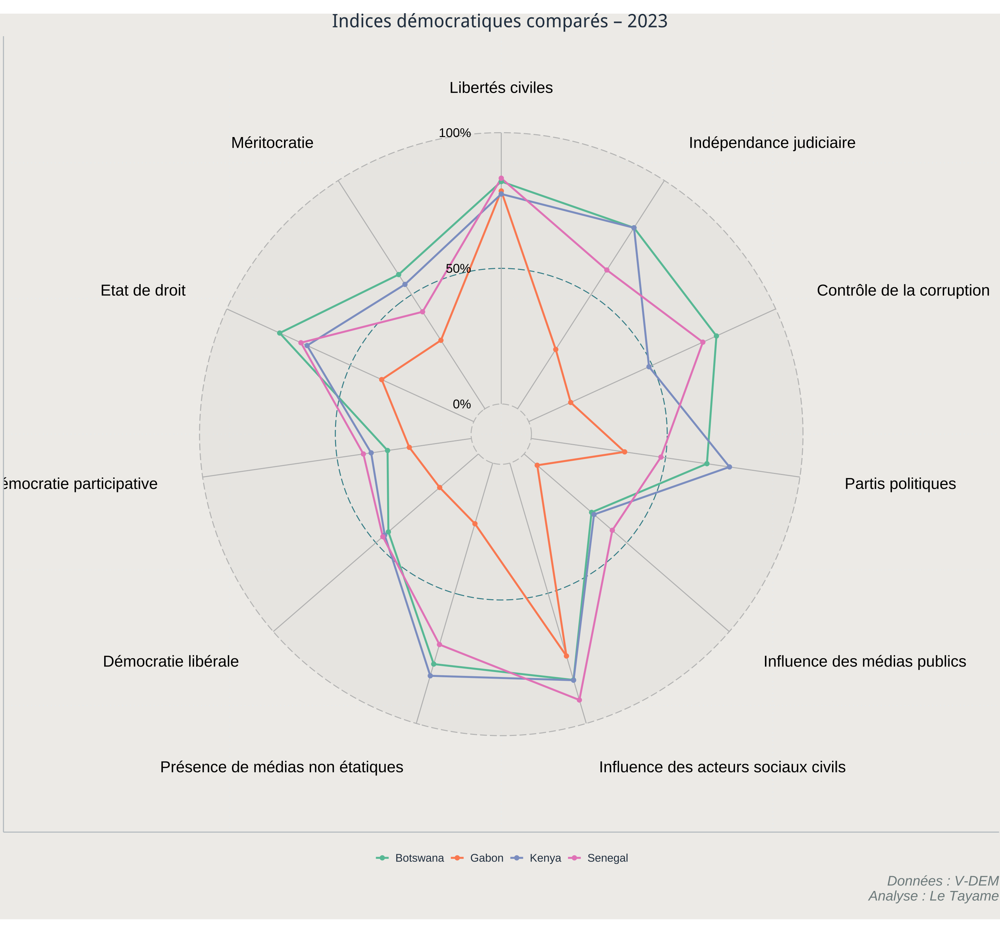

Indices démocratiques comparés – 2023
Introduction
Ce graphique radar présente une comparaison des performances démocratiques du Gabon, du Botswana, du Sénégal et du Kenya à partir des données 2023 de l’indice V-DEM. Cette comparaison vise à éclairer les dynamiques démocratiques dans différentes régions du continent africain, tout en mettant en perspective la trajectoire du Gabon.
Justification du choix des pays
Le choix de comparer le Gabon, le Botswana, le Sénégal et le Kenya repose sur une logique à la fois contextuelle, comparative et économique. Ces quatre pays représentent des trajectoires politiques contrastées tout en partageant des caractéristiques communes : une histoire post-coloniale, des institutions républicaines, une économie mixte reposant en partie sur les ressources naturelles, et des enjeux communs de gouvernance démocratique.
Le Botswana, en Afrique australe, est souvent cité comme un modèle de stabilité démocratique, soutenu par une économie tirée par l’extraction minière bien encadrée, notamment le diamant. Le Sénégal, en Afrique de l’Ouest, combine une tradition électorale solide avec une économie diversifiée, tournée vers les services, l’agriculture et, de plus en plus, les hydrocarbures. Le Kenya, moteur économique de l’Afrique de l’Est, est porté par un secteur privé dynamique, des infrastructures régionales fortes, et une société civile active. Le Gabon, enfin, bien que plus petit en population, partage avec ces pays une économie reposant sur les matières premières (pétrole, bois, manganèse) et amorce aujourd’hui une transition politique cruciale après plusieurs décennies de régime autoritaire.
Cette sélection permet donc d’observer, à travers le prisme des indicateurs V-DEM, les écarts, convergences et corrélations possibles entre performance économique et trajectoire démocratique dans des contextes africains comparables.
Évolution comparée des indices démocratiques – 2023 et 2024
Ces graphiques radar comparent les performances démocratiques du Gabon, du Botswana, du Kenya et du Sénégal sur les années 2023 et 2024, à partir des données fournies par le projet V-DEM (Varieties of Democracy). Chaque pays est évalué selon onze dimensions clés : libertés civiles, indépendance judiciaire, contrôle de la corruption, pluralisme politique, influence des médias publics, influence des acteurs sociaux civils, présence de médias non étatiques, démocratie libérale, démocratie participative, État de droit, et clientélisme.
Année 2023 : un contraste marqué entre les trajectoires
Le graphique montre des écarts significatifs entre les pays sur onze dimensions fondamentales de la démocratie, mesurées de 0 à 100 %.
En 2023, le Gabon affiche une configuration particulièrement restreinte, marquée par des scores faibles sur presque tous les axes par rappport à ses pairs. Les libertés civiles, la participation politique, la présence de médias non étatiques et l’État de droit figurent parmi les dimensions les plus fragiles. L’indice de clientélisme est élevé, signalant une forte personnalisation du pouvoir et une faible institutionnalisation des pratiques démocratiques.
En comparaison, le Botswana présente un profil nettement plus stable et équilibré, avec des scores élevés sur la majorité des dimensions, notamment en matière d’indépendance judiciaire, de contrôle de la corruption et de démocratie libérale. Le Sénégal affiche également une performance robuste, avec des indicateurs solides sur les libertés et la société civile, bien que certains points comme l’indépendance des médias publics ou la corruption restent à surveiller. Le Kenya, quant à lui, se situe entre ces deux pôles : on observe une forte dynamique participative et un pluralisme actif, mais aussi des fragilités sur le plan judiciaire et dans la gestion de la corruption.
Année 2024 : des signes d’amélioration pour le Gabon
En 2024, une évolution positive se dessine pour le Gabon sur certains plans. On observe une remontée de l’indice de libertés civiles, de l’État de droit et de la présence de médias non étatiques. Cette amélioration semble refléter les premiers effets du changement politique intervenu après la transition post-régime Bongo. Le radar 2024 montre ainsi une figure légèrement moins contractée que celle de 2023, mais encore loin d’un profil équilibré.
Malgré ces avancées, le Gabon reste en difficulté sur plusieurs fronts : clientélisme persistant, faible influence de la société civile, contrôle de la corruption peu efficace et participation politique encore limitée. Cela indique que les réformes démocratiques amorcées nécessitent un accompagnement plus profond et structurel pour produire des effets durables.
Chez les autres pays, peu de changements notables sont observés. Le Botswana continue de dominer l’indice avec constance. Le Sénégal maintient ses acquis démocratiques, tandis que le Kenya conserve une dynamique civique soutenue, bien que quelques reculs soient visibles dans l’indépendance judiciaire.
Comparaison globale : progrès relatifs et constats persistants
La comparaison entre les deux années montre un léger redressement démocratique pour le Gabon, mais aussi la persistance de plusieurs faiblesses structurelles. L’écart reste important avec les pays comparés, en particulier sur les dimensions institutionnelles fondamentales comme la justice, la presse libre ou le fonctionnement des partis politiques.
Cette évolution appelle à une consolidation des réformes démocratiques au Gabon, notamment en matière de gouvernance, de transparence et de participation citoyenne. Si l’ouverture actuelle n’est pas accompagnée d’un renforcement des contre-pouvoirs et d’une véritable autonomie des institutions, les progrès pourraient rester superficiels.
Conclusion
Le radar met en évidence la nécessité pour Ces graphiques permettent de visualiser de manière synthétique les évolutions démocratiques de pays africains aux profils variés. Ils soulignent aussi que la démocratie ne se mesure pas seulement à l’alternance politique, mais à l’ensemble des mécanismes structurels qui garantissent l’État de droit, la transparence, la liberté d’expression et l’implication de la société civile.
Le Gabon, en 2024, amorce un tournant qu’il faudra transformer en réforme durable. . Ce pays devrait engager des réformes institutionnelles profondes : renforcement de l’indépendance judiciaire, ouverture du paysage médiatique, lutte contre la corruption, et valorisation de la participation citoyenne. Le Botswana confirme sa place de référence. Le Sénégal et le Kenya maintiennent leur équilibre malgré leurs tensions internes. Ces données offrent une base précieuse pour suivre les trajectoires futures et orienter les priorités de renforcement démocratique sur le continent.
Références
- Données : V-Dem Institute
- Analyse et visualisation : LIOS
- A propos des auteurs
-
LabInc est une entreprise innovante qui se spécialise dans le développement de solutions technologiques avancées, avec un accent particulier sur l’intelligence artificielle et l’analyse de données.
-
OgooueStat est un think tank indépendant basé au Gabon, spécialisé dans l’analyse des politiques publiques, la recherche économique et la statistique environnementale. Notre mission est d’orienter les décisions politiques et de soutenir le développement durable à travers des études rigoureuses et des recommandations fondées sur des données probantes.
- Copyright and licence
-
© 2025 LIOS

 This article is licensed under a Creative Commons Attribution 4.0 (CC BY 4.0) International licence.
This article is licensed under a Creative Commons Attribution 4.0 (CC BY 4.0) International licence.
How to cite
:LabInc, Ogooue Stat. “Etude du reseau routier gabonais” LIOS, Mars 29, 2025.